Analiza rješenja · JOI Spring Camp 2023 · Dan 1
Dvije valute
O ovom članku
Tekst je prijevod službene japanske prezentacije rješenja, preoblikovan u članak. Slajdovi su ugrađeni kao slike; natpis pod svakim slajdom je prijevod teksta na njemu. Dijelovi označeni kao trenerska napomena nisu u izvornoj prezentaciji — dodani su da popune korake koje slajdovi preskaču ili samo skiciraju.
Slajdovi
Preformulacija
izvorni slajdovi 1–5
-
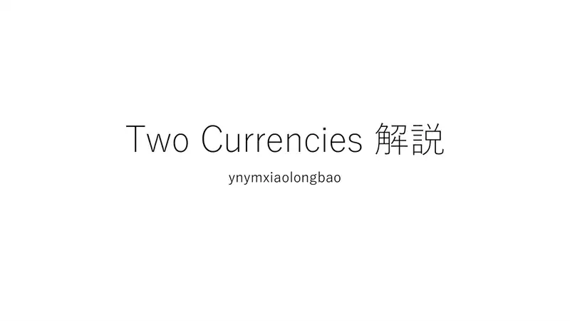
1Naslovni slajd: Two Currencies; analiza: ynymxiaolongbao. -
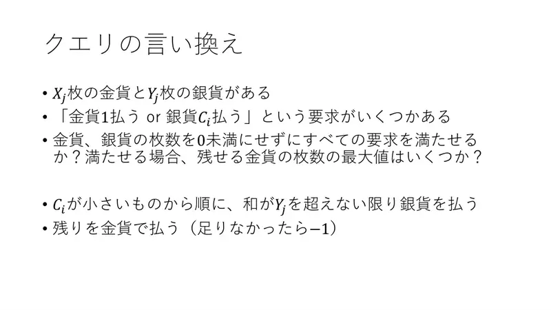
2Upit: $X$ zlatnika, $Y$ srebrnjaka, zahtjevi „1 zlatnik ili $C_i$ srebrnjaka”. Plaćaj srebrom po rastućem $C_i$ dok zbroj ne prijeđe $Y$; ostalo zlatom ($-1$ ako ne ide). -
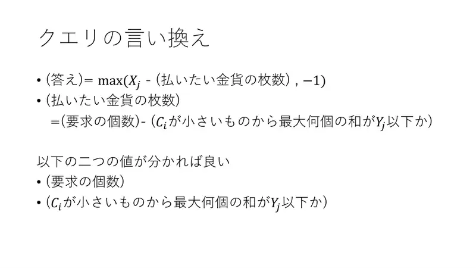
3Odgovor $= \max(X - \text{(zlatnika)}, -1)$; zlatnika = (broj zahtjeva) − (najveći broj najjeftinijih sa zbrojem $\le Y$). Trebamo te dvije veličine. -
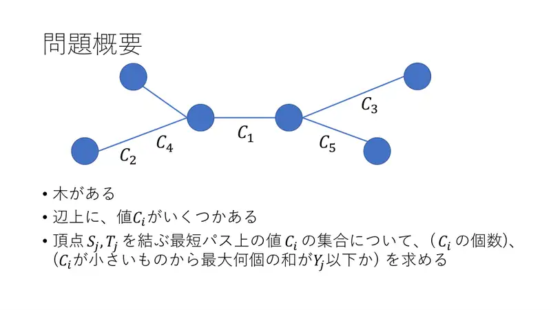
4Model: stablo s vrijednostima $C_i$ na bridovima; put $S_j$–$T_j$. -
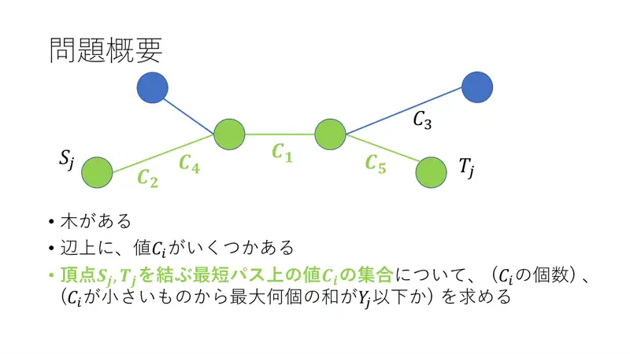
5Za put treba broj vrijednosti i najveći broj najmanjih sa zbrojem $\le Y_j$.
← → tipke ili klik na sliku
Podzadaci 1–2 38 bodova
Koraci algoritma
Naivno i jednake cijene
izvorni slajdovi 6–8
-
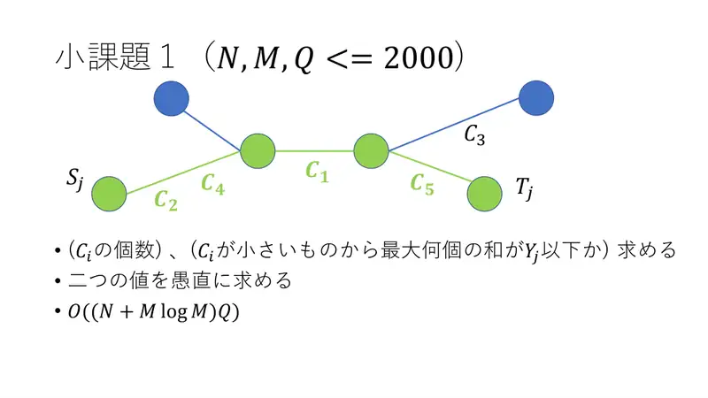
6Podzadatak 1: obje veličine izravno; $O((N + M\log M)Q)$. -
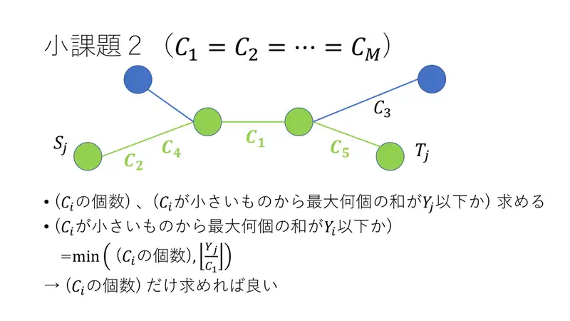
7Podzadatak 2: jednaki $C$ ⇒ drugi broj je $\min(\text{broj}, \lfloor Y/C_1\rfloor)$ — treba samo broj točaka. -
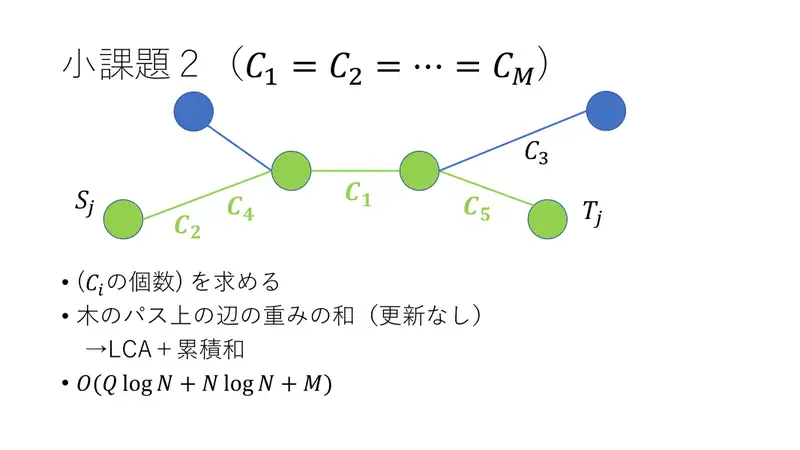
8Broj točaka na putu = zbroj težina bridova na putu bez ažuriranja: LCA + prefiksni zbrojevi, $O(Q\log N + N\log N + M)$.
← → tipke ili klik na sliku
Podzadatak 3 i puni bodovi 62 boda
Koraci algoritma
Paralelno binarno pretraživanje
izvorni slajdovi 9–16
-
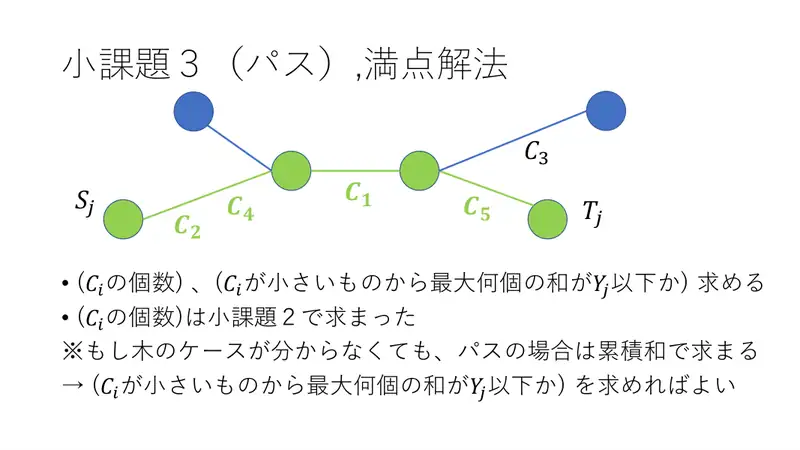
9Broj točaka imamo (za put i prefiksnim zbrojevima). Ostaje „najveći broj najmanjih sa zbrojem $\le Y$”. -
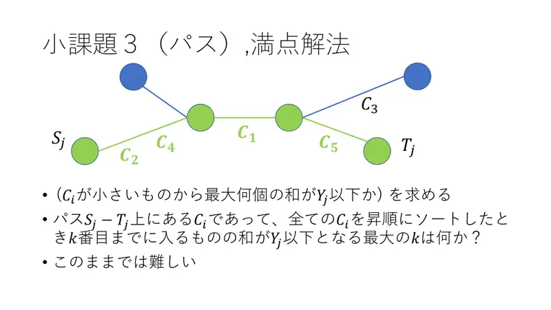
10Preformulirano: najveći $k$ takav da točke na putu među prvih $k$ globalno sortiranih imaju zbroj $\le Y_j$. Izravno teško. -
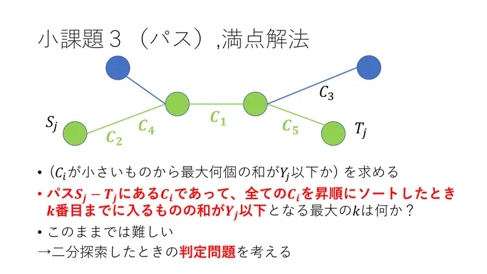
11Razmotri provjeru za binarno pretraživanje. -
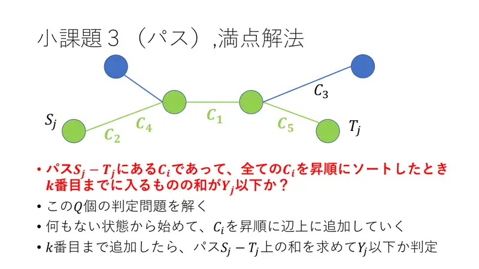
12Za $Q$ provjera: kreni od praznog, dodaj $C_i$ po rastućem redu na bridove; nakon $k$ dodavanja izračunaj zbroj na putu i usporedi s $Y_j$. -
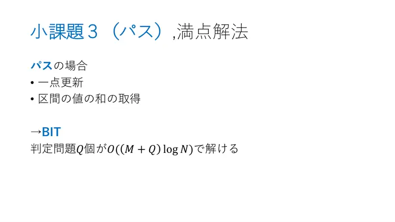
13Put: ažuriranje točke + zbroj intervala → BIT; $Q$ provjera u $O(M + Q\log N)$. -
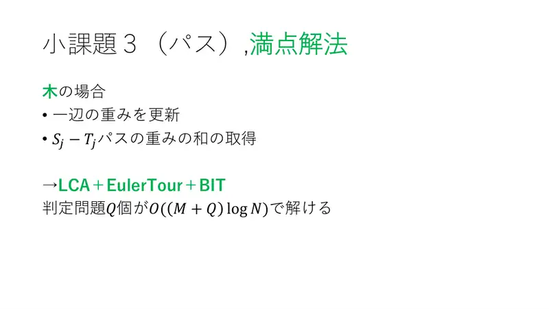
14Stablo: ažuriranje brida + zbroj na putu → LCA + Eulerov obilazak + BIT; isto. -
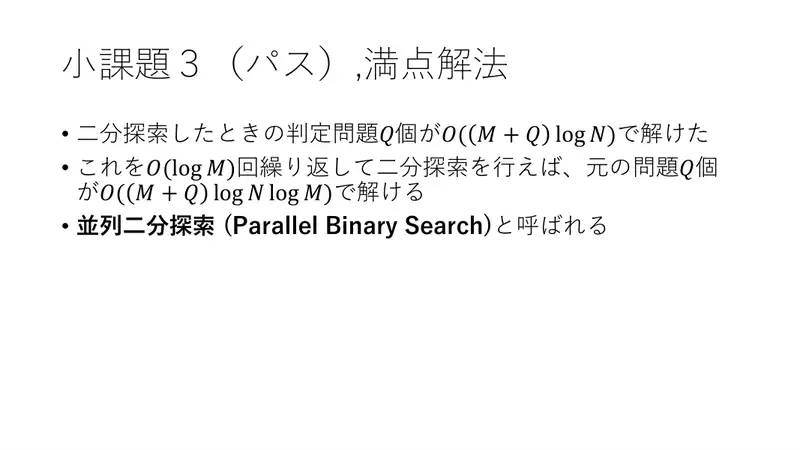
15Ponovi $\log M$ puta: $O(M + Q\log N\log M)$ — paralelno binarno pretraživanje. -
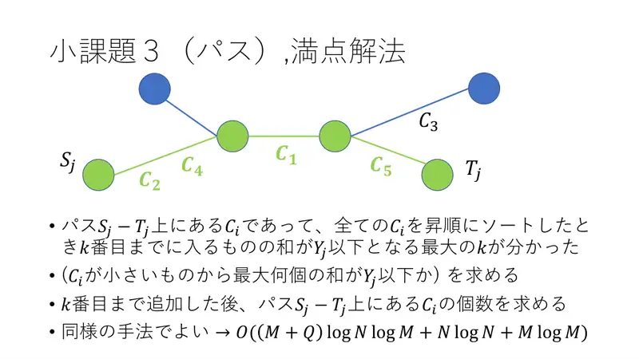
16Kad znamo $k$, na isti način prebroji točke na putu među prvih $k$. Ukupno $O(M + Q\log N\log M + N\log N + M\log M)$.
← → tipke ili klik na sliku
Slajdovi
Napomena i bodovi
izvorni slajdovi 17–18
-
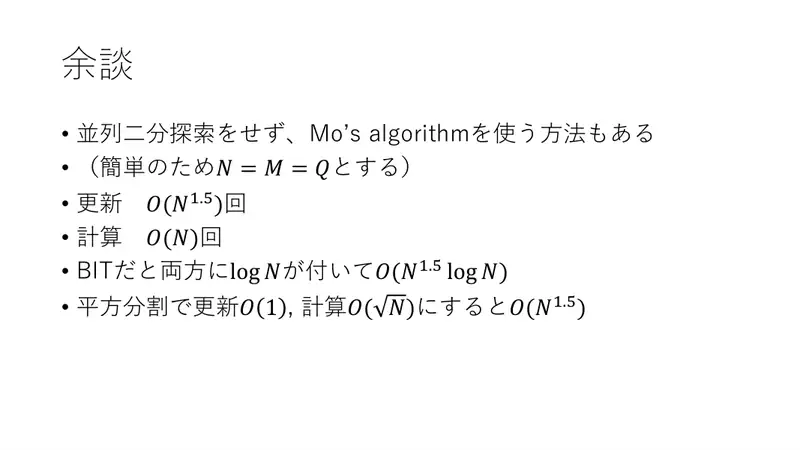
17Alternativa: Mo-ov algoritam ($N = M = Q$): $O(N^{1.5})$ ažuriranja i $O(N)$ izračuna; s BIT-om $O(N^{1.5}\log N)$, korijenskom dekompozicijom $O(N^{1.5})$. -
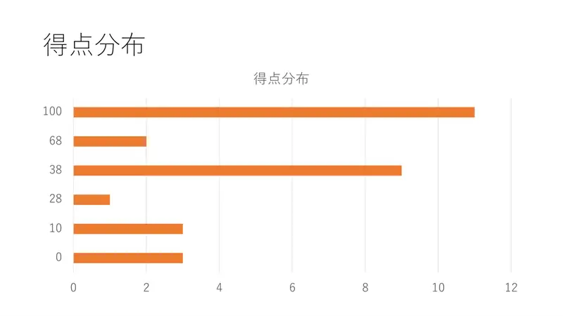
18Raspodjela bodova.
← → tipke ili klik na sliku
Sažetak
- Srebrom plaćaj najjeftinije; odgovor $\max(X - (k-m), -1)$.
- $m$ paralelnim binarnim pretraživanjem po globalno sortiranim cijenama uz Euler + Fenwick, ili perzistentnim segmentnim stablom po putu od korijena.